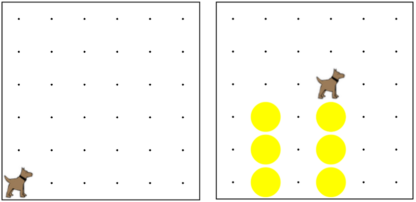

Write a program that has karel build two towers,
and then end up on top of the second tower.
Make sure to create several functions to make your program clear.
Can you find a pattern and create a function you use twice?
編寫一個程序，有卡雷爾建設兩座塔樓，然後最終在第二個塔的頂部。確保創建幾個功能，
使你的程序清楚。你可以找到一個模式，創造您使用兩次函數？

move(); 移動();
turnLeft(); 左轉();
putBall(); 放球();
takeBall(); 拿球();
function start(){ 功能啟動(){
// When you press the Run 當按下運行
// button, the start() 按鈕，開始（）
// function gets called 函數被調用
}